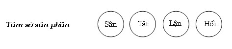

|
BuddhaSasana Home Page |
Vietnamese, with Unicode VU Times font |
Tâm Sở Vấn Đáp
Phần II - Tâm sở Bất thiện
(Akusalacetasikā)
Tỳ
kheo Chánh Minh
Chùa Bồ Đề, Vũng Tàu
|
Xin lưu ý: Cần có phông UnicodeViệt-Phạn VU Times cài vào máy để đọc các chữ Pàli. |
|
[03] C- Tâm sở sân phần. Biểu đồ tâm sở sân phần:  107- HỎI: Tâm sở sân (dosa cetasika) ra sao? ĐÁP: Do sa (sân) xuất nguyên từ ngữ căn Du là khó chịu, buồn rầu. Theo quan niệm thông thường “sân” là cách thức “nóng nảy” của tâm. Thật ra, “phẩn nộ” hay “nóng nảy” chỉ là trạng thái thô thiển của tâm sở sân, trạng thái trung bình của tâm sở sân là buồn rầu (soka), khóc than (parideva), khó chịu (domanassa), đau đớn xác thân (dukkha) và trạng thái vi tế của tâm sở sân là “không hài lòng”, “không an lạc”, “không thích thú”, “không hân hoan”. Những từ ngữ chỉ cho tâm sở sân là: hiṃsa (sát hại), palāsa (ác ý hay thù oán), kodha (phẫn nộ), soka (buồn rầu), parideva (than khóc – than thở, khóc), domanassa (khó chịu), dukkha (khổ ). - Sát hại (hiṃsa) là sự khó chịu lên đến cực điểm, hoàn toàn không hài lòng với đối tượng, ở giai đoạn này tâm không hề chần chừ khi hủy diệt đối tượng. Chính vì không chịu đựng nổi đối tượng (cảnh), bị đối tượng áp chế, khi hủy diệt xong đối tượng, tâm như thoát ra sự áp chế, nên bộc phát trạng thái hài lòng, thỏa thích khi “chướng ngại” không còn. Đó là lý do vì sao một người sát hại xong kẻ thù, y thích chí cười vang hoặc vô cùng thỏa mãn. - Ác ý (palāsa), phẫn nộ (kodha) cũng là trạng thái khó chịu cao độ trước cảnh, nhưng tâm còn có thể chịu đựng được. Ác ý hay phẫn nộ nếu không được kềm chế, sẽ dẫn đến sát hại. Kềm chế được ác ý, phẫn nộ, được xem là tốt. Đức Phật có dạy:
Kệ ngôn trên được Đức Phật dạy, nhân câu truyện: Một vị tỳ khưu đốn cây để làm liêu thất, cội cây ấy của một nữ thiên nhân. Vị tỳ khưu vô tình làm con nàng bị thương, thiên nữ phát sanh sự phẫn nộ, toan sát hại vị tỳ khưu, nhưng nàng kịp thời kềm chế được, và đi đến trình câu truyện lên Đức Thế Tôn. [131] - Sợ hãi (bhaya), khiếp đảm (bherava) là một dạng khác của tâm sân. Cả hai đều phản ánh tâm trạng không hài lòng với cảnh. Sợ hãi phát xuất từ cảnh bên trong, như kẻ trộm cảm thấy sợ hãi khi nghĩ đến hình phạt của vua quan. Còn khiếp đảm xuất phát từ cảnh bên ngoài, như một người thấy cảnh tra tấn, hành hạ tội nhân. Hoặc như người một mình trong rừng vắng, cảm thấy sợ hãi lẫn khiếp đảm. Có những sợ hãi (khiếp đảm) là duyên phát sinh các thiện pháp, như cảm thấy sợ hãi đối với 4 khổ cảnh hay những hình phạt của vua quan, nên tránh xa tội lỗi, làm những việc phước thiện. Trái lại có những sợ hãi (khiếp đảm) khiến bất thiện pháp đang sanh lên được tăng trưởng, như người quá sợ hãi khi thấy tánh mạng hoặc tài sản bị đe dọa, y trở nên liều lĩnh, hung bạo lao vào mọi việc ác để hủy hoại đối tượng đe dọa y (sợ quá hóa liều). Chính Đức Phật khi còn Bồtát, Ngài cũng có những khiếp đảm khi ở trong rừng Uruvela, nhưng Ngài khác với chúng sanh khác là khi kinh hoàng thì đổi tư thế như bỏ chạy... riêng Ngài vẫn giữ nguyên tư thế và chú niệm diệt trừ khiếp đảm ấy. “Này Bàlamôn! Trong khi ta đi kinh hành qua lại, sợ hãi, khiếp đảm ấy đến. Này Bàlamôn, ta không đứng, ta không ngồi, ta không nằm; nhưng ta trừ diệt sự sợ hãi, khiếp đảm ấy trong khi ta đi kinh hành qua lại”[132]. Lại nữa, Đức Phật có dạy:
Đây là những minh họa cho sự sợ hãi làm sanh khởi thiện pháp. 108- HỎI: Tứ ý nghĩa của Tâm sở Sân ra sao? ĐÁP: Tâm sở sân có bốn ý nghĩa là: - Trạng thái: Làm cho thân tâm thô tháo (caṇḍikka lakkhaṇa). - Phận sự: Thiêu đốt (hủy hoại) cảnh (nissaya dāha raso). - Thành tựu: Phạm tội (hay tạo nghiệp ác bất thiện) (dussanapaccuppaṭṭhano). - Nhân cần thiết: thiếu hiểu biết (hay thiếu lý trí) (upaṭṭhānakārapaccupaṭṭhānā). Giải: - Trạng thái: Chữ caṇḍikka = caṇḍa = ikka, caṇḍa là thô lỗ, cộc cằn, hung bạo. Ikka xuất phát từ chữ accha [134], accha là “chói sáng, rực rỡ, không che đậy..” Caṇḍikka là “không che đ6ạy sự thô lỗ”, “rực rỡ sự thô lỗ”... Tâm sở Sân là cách không hài lòng, khó chịu với đối tượng (cảnh) nên điều sử thân hành, ngữ hành để hủy diệt đối tượng, do tính cách xúc chạm cảnh mạnh mẽ nên nảy sinh sự khua bày rõ rệt, ví như hai thanh sắt chạm nhau sẽ phát ra âm thanh. Sự biểu lộ thân hay ngữ thô lỗ (thô bạo) là một trong những trạng thái của tâm sở Sân, ngoài ra về ý thì: Tâm trở nên thô cứng, rắn rỏi. Điều dễ nhận thấy là: Khi tâm sân cường mạnh thì người này bất chấp đạo lý (tâm rắn rỏi), hay khi có sự khó chịu với người nào thì không thể có tình thương với người đó (tâm thô cứng). Nên ghi nhận rằng: “Khi sân sinh khởi thì không thể có tình thương, nhưng không có tình thương không hẳn là tâm sân, một người không thương người xa lạ nhưng không hẳn khó chịu với người ấy. Phận sự: Chữ nissaya là “nương tựa”, tâm sinh lên do nương vào cảnh, thiêu đốt (dāha) (nơi) nương tựa là thiêu đốt cảnh, hay hủy diệt đối tượng. Tâm sở Sân khi sanh lên, luôn luôn có tính không hài lòng đối tượng và chỉ muốn tiêu hủy những gì (cảnh) mà nó không hài lòng. Vì rằng: Tâm sở sân không bám víu cảnh[135], nó không có tình cảm, tâm sở sân chỉ thấy những khuyết điểm của đối tượng, nên nảy sinh “không hài lòng” với đối tượng. Chính vì thế “hủy diệt cảnh” là phận sự của tâm sở Sân, ví như người thấy bộ y phục tuy mới, nhưng thấy dơ bẩn dù chút ít thì không muốm mặc. Thành tựu: Hành giả quán sát thân ngữ, thấy rõ sự thô thiển của nó và thấy thân ngữ này trở thành thân hành ác, ngữ nói ác. Hành giả hiểu biết đó là sự thành tựu của tâm sở Sân. Thân vi phạm vào: sát sanh, trộm cắp. Ngữ vi phạm vào: nói dối, nói hai lời (đâm thọc), nói ác... Đó là sự thành tựu của tâm sở Sân. Nhân cần thiết: Chữ upaṭṭhānakāra = upa (trên) + ṭhāna (lý do)+ akāra (không làm). Upa+ ṭhāna = upaṭṭhāna (sự hiểu biết). Nên upaṭṭhānakāra được dịch là “thiếu hiểu biết” hay “không hành động hiểu biết”. Tâm sở Sân sanh khởi do thiếu điềm tỉnh (santa), thiếu điềm tỉnh là cách biểu hiện của sự thiếu hiểu biết hay không hiểu biết. Thông thường người thiếu sự suy xét, dễ dàng sinh khởi khó chịu khi xúc chạm cảnh chướng ngại (paṭighanimitta). Đức Phật có dạy: “Ví như vết thương đang làm mủ (duṭṭhāruka), nếu bị cây gậy hay miểng sành (kaṭhakā) đánh phải, liền chảy mủ nhiều hơn. Cũng vậy, này các tỳ khưu, ở đây có người phẩn nộ, nhiều hiềm hận, dầu có nói chút ít, cũng tức tối (abhisajjati), phẩn nộ (kuppati), sân hận (uyāpajjati), sừng sộ (paṭiṭṭhīyati), biểu lộ sự phẩn nộ và bực tức (appaccayati)” [136]. Và Đức Phật gọi người này có tâm ví như vết thương (arukūpamacitta). Chính vì tâm không điềm tỉnh, dẫn đến thiếu (hay không) có trí suy xét, khiến tâm luôn loạn động, bất bình, khó chịu. Đây là nhân cần thiết cho tâm sở sân.
109- HỎI: Có bao nhiêu nhân phát sanh tâm sở Sân?. ĐÁP: Phát sanh tâm sở Sân chính là “ái ngã” và ái ngã sở (yêu thích cái của tôi). Từ hai điều này, biểu hiện qua chín cách hay chín điều dẫn đến sinh khởi tâm sở sân là: 1. Do nghĩ người ấy đã làm hại tôi. 2. Do nghĩ người ấy đang làm hại tôi. 3. Do nghĩ người ấy sẽ làm hại tôi. 4. Do nghĩ người ấy đã làm hại người thân của tôi. 5. Do nghĩ người ấy đang làm hại người thân của tôi. 6. Do nghĩ người ấy sẽ làm hại người thân của tôi. 7. Do nghĩ người ấy đã làm lợi đến kẻ thù của tôi. 8. Do nghĩ người ấy đang làm lợi đến kẻ thù của tôi. 9. Do nghĩ người ấy sẽ làm lợi đến kẻ thù của tôi. Ngoài ra, còn có những nguyên nhân khác như: “Nổi buồn vu vơ”, “ngậm ngùi cho thân phận”, “đau buồn khi mất người thân”... Riêng “xúc động” có thể là thiện, có thể là bất thiện. Như “xúc động trước nổi khổ của người khác”, “xúc động” trước những gương nhẫn nại của các bậc tiền hiền như Đức Phật, Thánh Thinh văn là thiện, là tâm sở Bi (karunācetasika). Còn xúc động đến rơi lệ khi xa cách người mình ái luyến là bất thiện. Ngài Buddhaghosa có giải thích: Trí và Sân có điểm giống nhau là: - Về hình tướng: Sân và trí có vẻ thô tháo bên ngoài. - Về đặc tính: Sân và trí đều có chung đặc tính “không tình cảm, không bám víu đối tượng”. Điểm khác nhau là: - Sân tìm thấy lỗi không thật có. Trí tìm thấy lỗi thật có. - Sân sinh khởi để buộc tội chúng sanh, trí sinh khởi buộc tội các hành (saṅkhāra)[138]. Do đó, những trường hợp “xúc động” thuộc về dạng bất định, có thể là tâm sở sân, có thể là tâm sở Bi hợp với trí. Đức Phật có dạy: “Domanassa pa’haṃ devānaṃ inda duvidhana vadāmi, jevitabham pi asevitabbaṃ pi”. - Này hiền giả, Ta nói ưu cũng có hai loại: một loại nên thân cận, một loại nên tránh xa.[139] Và: loại ưu nào có thể biết được “khi tôi thân cận với ưu này, bất thiện pháp suy giảm, thiện pháp tăng trưởng”, thời ưu ấy nên thân cận. Ở đây, loại ưu nào có thể biết được “khi tôi thân cận với ưu này, thiện pháp suy giảm, bất thiện pháp tăng trưởng”, thời ưu ấy nên tránh xa.” (sđd). Loại ưu nào cần xa lánh? Loại ưu nào cần thân cận? - Loại ưu nào có liên hệ với ái ngã, ái ngã sở là ưu cần xa lánh. Hình ảnh Đức Ānanda nước mắt đầm đìa khi Bậc Đạo sư viên tịch là loại ưu nên xa lánh. - Loại ưu nào không liên hệ đến ái ngã, ái ngã sở là loại ưu nên thân cận, như nhàm chán ác pháp, nhàm chán các pháp hành, kinh cảm trước sinh, già, bịnh, chết... Hình ảnh của thiên chủ Sakka, Phạm thiên Sahampati cảm thán trước pháp hành vô thường khi Đức Thế Tôn viên tịch, là loại ưu nên thân cận. 110 -HỎI: Hãy giải thích rõ về makkha, palābha, thambha và sārambha?. Chi pháp là gì ? ĐÁP: Makkha là “gièm pha người khác” nhằm mục đích nâng cao cái tôi , ở một số trường hợp thì makkha nghĩa là “phản bội hoặc vong ân”. Như: - Người có tính sân có 6 đặc tính là:
Hay: Khuynh hướng xấu của chúng sinh có bốn: a- Khuynh hướng nặng về sân, không thiên về Pháp (kodhagaru na saddhammagaru). b- Khuynh hướng nặng về vô ân, không thiên về giáo pháp (makkhagaru na saddhammagaru). c- Khuynh hướng nặng về lợi lộc, không thiên về giáo pháp ( lābhogaru na saddhammagaru). d- Khuynh hướng nặng về sự cúng dường, không thiên về Giáo pháp (sakkaragaru na saddhammagaru). (sđa – pháp bốn chi). Tư cách phản bội hay quên những người từng giúp mình, hoặc có tư cách bội bạc với cha, mẹ, thầy tổ, bạn hữu, thân quyến đã từng thi ân cho mình, gọi là makkha. Đức Sāriputta (Xálợiphất) được Đức Phật tán thán là “đệ nhất tri ân người”, vì bất kỳ ai giúp Ngài việc gì, Ngài luôn ghi nhớ vcà tìm cách báo đáp, ngay cả Bàlamôn Rādha chỉ cúng dường Ngài vài muỗng cơm khi Ngài đi khất thực, nhưng Ngài vẫn nhớ. Về sau, Ngài là thầy tế độ cho Bàlamôn Rādha theo lịnh của Đức Phật. Đối với cha mẹ: Đức Phật có dạy: “Có hai hạng người này, này các tỳ khưu khó tìm được ở đời. Thế nào là hai? Người thi ân trước (pubbakārī) và người nhớ ơn đã làm (kataññū katavedī)[141]. Hai hạng người này khó tìm ở đời”[142] Đức Phật xác định phẩm chất nhớ ân là đặc tính của bậc chân nhân, còn trạng thái bạc ân là phẩm hạnh thường có của kẻ độc ác. “Người không phải bậc chân nhân, này các tỳ khưu, không biết ơn, không nhớ ơn (aketavedī). Đối với những người độc ác, đây là đặc tính chúng được biết đến”. “Còn các bậc chân nhân, này các tỳ khưu là biết ơn và nhớ ân. Đối với những thiện nhân, đây là đặc tính chúng được biết đến”.[143] Và Ngài cũng dạy: “Có hai hạng người không thể trả ơn được, đó là mẹ và cha”[144]. Đối với thầy: Có hai hạng thầy: -
Thầy thế tục. Thầy thế tục là những vị dạy về nghiệp nghệ, nghệ thuật hoặc dạy tri thức phổ thông. Đối với Thầy dạy về nghiệp nghệ hay tri thức trong đời sống thế tục, cũng không thể vong ân. Câu chuyện bổn sanh về nhạc sĩ Musila là học trò của nhạc sĩ Guttila, sau khi học thành tài về nghệ thuật, thuật đánh đàn, Musila đã tranh tài với thầy của mình là nhạc sĩ Guttila chỉ vì lợi đắc, là trường hợp điển hình cho sự vong ân nầy.[145] Thầy theo tín ngưỡng. Trong Phật giáo có nêu lên bốn hạng thầy là: - Thầy tế độ Sadi (pabbajjācāriya): là người chuyển phẩm mạo người thế lên phẩm mạo bậc xuất gia. - Thầy tế độ đưa lên bậc cao (upasampadācāriya): là vị cho xuất gia thọ giới tỳ khưu. - Thầy nương nhờ (Nissayācāriya): là vị thầy chỉ dạy (cho Sadi hoặc tỳ khưu) trong khi vị tân tỳ khưu chưa đúng năm hạ, lại phải xa lìa thầy tế độ. - Thầy dạy pháp (udesācāriyā hay dhammācāriya): là thầy dạy về pháp học hay pháp hành. Trong thời Đức Phật sáu vị tôn sư nổi tiếng (lục sư ngoại đạo), đã thuyết giảng những lý thuyết tà kiến. Nhiều bậc trí giả sau khi hiểu ra chân lý, tuy quay về Chánh pháp nhưng cũng tìm cách trả ơn thầy, bằng cách khuyên Thầy mình nương nhờ Phật đạo, như Ngài Sāriputta – Moggallāna, khuyên Sañjaya Belatthīka nương nhờ Đức Thế Tôn. Tuy ông Sañjaya Belatthika từ chối vì danh lợi của mình, nhưng hành động của hai Ngài Sāriputta – Moggallāna cũng nêu lên sự tri ân của mình. Lại nữa, khi Trưởng giả Upāli hiểu ra Chánh pháp, từ bỏ giáo phái của Nigantha nātaputta. Đức Phật đã dạy: “Nầy Gia chủ, đã từ lâu gia đình ngươi như là giếng nước mưa nguồn cho các ngưới Nigaṇṭha. Hãy cúng dường các món ăn cho những ai đến với ngươi” [146]. Ngay cả Bồtát sau khi thành đạo Vô thượng Chánh giác, nghĩ đến những người có trí cần tế độ, trước tiên Ngài nghĩ đến hai vị Thầy trong bước đường tìm đạo giải thoát của Ngài, đó là đạo sĩ Ālāra và Uddaka kālāma. - Đối với thân hữu. Những người đã giúp đỡ mình trong những lúc khó khăn cũng không thể quên ân. Trong Bổn sanh có ghi câu chuyện về tiền thân của Devadatta là trưởng giả Piliya. Trưởng giả Piliya kết bạn cùng trưởng giả Saṅkha (tiền thân Đức Phật), khi Piliya gặp tai nạn đã tiêu tán hết tài sản, trở thành nghèo túng tìm đến nương nhờ Bồtát. Bồtát cho Piliya 400 triệu tiền vàng rồi chia nữa tài sản cho Piliya. Về sau, Bồtát gặp tai nạn tương tự như Piliya trước đây, khánh kiệt gia tài, tìm đến Bārāṇasī để nương nhờ bạn mình là trưởng giả Piliya, nhưng Piliya đã xua đuổi Bồtát.[147] Chính Đức Phật, sau khi nghĩ đến 2 vị thầy, biết được hai Ngài đã mệnh chung, Đức thế Tôn nghĩ đến 5 vị Đạo sĩ Aññakoṇḍañña (A nhã Kiều Trần Như), là những vị đã giúp đở, phục vụ Ngài khi Ngài chưa chứng quả Vô thượng Chánh giác. Như vậy, sự bạc ân xuất phát từ tham hợp với mạn hoặc sân dẫn đầu. Do tham vì tự ngã, vì lợi đắc, do sân vì bất mãn, khó chịu, ganh tài... - Thambha: nghĩa là sự chai cứng (khó dạy) hay “cương ngạnh”. Đó là sự không tôn kính bậc đáng tôn kính, thambha biểu thị qua thái độ lơ là, làm ngơ không chào hỏi, tôn kính. Nhưng không biểu lộ thái độ hay hành động nào rõ rệt cả. Thambha do tham hợp với mạn dẫn đầu hoặc do sân, nhưng thông thường là do sân. - Palāsa là “tinh ranh với ác ý”, hay “hiểm độc, hiểm ác”. Như vua Pasenadi (Batưnặc) do nghe lời sàm tấu của một số Đại thần, nên cho phục binh sát hại toàn bộ cha con của Thống soái Baṅdhula. Chi pháp của palāsa là do sân dẫn đầu. Sārambha: nghĩa là “liều lĩnh tranh cường”. Sārambha là thái độ tranh thắng một cách quyết liệt, bất chấp mọi lý lẽ đúng sai, hay bất kể nguy hiễm đến tính mạng. Có hai sự tranh đua quyết liệt: - Tranh đua do ngã mạn, vì là người có danh vọng... nên quyết liệt tranh đua. - Tranh đua do nóng giận, chính nóng giận dẫn đến thái độ liều lĩnh, bất chấp mọi hậu quả. Sārambha là cách tranh đua do sân dẫn đầu. 111- HỎI: Thế nào là tâm sở Ganh tỵ (Issā cetasika)? ĐÁP: Issā xuất nguyên từ I + căn Su. ( I + căn SU = Issā). Căn Su là đố kỵ, ganh ghét. Issa là “không hài lòng” trước hạnh phúc, thịnh vượng, thành công.. của người khác, vì những điều này người ấy không (hay chưa) đạt được. Pāli có giải rằng: Issayanā = Issā. Không chịu được điều người hơn mình, gọi là ganh tỵ [148]. Nguyên nhân sâu xa của ganh tỵ xuất phát từ sự tự tôn, hãnh diện điều mình có, nhưng điều này đã bị người khác lấn lướt, vượt trội hơn. Nói cách khác là do ngã mạn quá mạnh (atimāna) nên khó chịu khi cảm thấy “cái của tôi” bị va chạm mạnh. Khi thấy một người khác có sự thành công hơn mình thì lòng tự tôn bị tổn thương, và theo xu thế phát triển của bất thiện pháp, nó trở thành ganh tỵ. Đây cũng là lý do vì sao Ganh tỵ được xếp vào tâm sở Sân phần. Các Ngài Giáo thọ sư dạy rằng: “ganh tỵ làm tổn hại đến hoan hỷ (muditā)”. Tức là hủy hoại tâm sở Tùy hỷ (muditācetasika). Thông thường, ganh tỵ chỉ khởi sinh giữa các đối tượng có cùng hoàn cảnh hay cùng môi trường hoạt động, cùng chí hướng, như: Bác sĩ ganh tỵ với bác sĩ, pháp sư ganh tỵ với pháp sư, tỳ khưu ganh tỵ với tỳ khưu... Tuy nhiên, cũng có những trường hợp ngoại lệ, như bác nông dân có thể ganh tỵ với người giàu có khi thấy người này có nhà cao cửa rộng... Có bao nhiêu loại ganh tỵ? Nói gọn thì ganh tỵ có những cách sau đây:
Giải: - Ganh tỵ do lợi lộc: Là không hài lòng khi thấy người khác có lợi lộc hơn mình, như chủ nhân cửa hàng A thấy cửa hàng B buôn bán phát đạt hơn mình thí không hài lòng. - Ganh tỵ do tín ngưỡng: Là thấy giáo thuyết của người được người ái mộ hơn mình thì không hài lòng. Như những giáo chủ ngoại giáo xuyên tạc giáo thuyết của Đức Phật. - Ganh tỵ do trọng vọng: Là thấy người khác được tôn sùng ái mộ hơn mình thì không hài lòng. Như tỳ khưu Devadatta thấy phật tử hỏi thăm các vị Thánh Alahán như: Sāriputta, Moggallāna, Mahā Kassapa... thì không hài lòng. - Ganh tỵ do danh tiếng: Là thấy người khác được khen ngợi thì không hài lòng, như vị tỳ khưu nghe vị tỳ khưu khác được tín đố Phật giáo khen ngợi thì tìm cách gièm pha... - Ganh tỵ do cúng dường: Như vị tỳ khưu thấy vị tỳ khưu khác được cúng dường, còn mình thì không hay được ít hơn thì không hài lòng. 112- HỎI: Tứ ý nghĩa của tâm sở Ganh tỵ (tật đố) là gì? ĐÁP: Tứ ý nghĩa của tâm sở Ganh tỵ là: - Trạng thái: Ganh ghét sự thành đạt tài sản của người khác (aññasampatti ussāyana lakkhanā). - Phận sự: Không hài lòng (khi thấy) người khác có tài sản tốt đẹp (parasampattiyā anabhirati rasā). - Thành tựu: Quay lưng với sự thành đạt của người khác (parasampatti vimukhatā paccupaṭṭhāna). - Nhân cần thiết: Là sự thành đạt (của) người khác (parasampatti padaṭṭhānā). Giải: - Trạng thái: Chữ aññasampatti = añña (cái khác) + sampatti (thành đạt) usāyana = usu (khó chịu)+ āyana (có lợi đắc) Ganh tỵ là sự khó chịu khi thấy người khác thành tựu những lợi đắc, hay không hài lòng trước sự thành công (của người) khác. Sự khó chịu này phát sanh theo hai cách: - Vì thấy thành tựu của mình thua kém trước sự thành công của người khác nên khó chịu. - Vì mình chưa đạt được sự thành tựu (sampatti) trong khi người đã thành đạt. Điều lợi đắc (āyana) ở đây ám chỉ danh tiếng, tài sản, địa vị, sự tôn sùng ... là những điều đáng hài lòng. Trạng thái của Ganh tỵ là khó chịu, không thích người khác thành đạt hơn mình. - Phận sự: Chữ anbhirati = na (không) + abhirati (thích thú, hài lòng). Ganh tỵ sinh lên, nó có nhiệm vụ làm cho tâm cùng các pháp đồng sanh “không thích thú” trước sự thành tựu của người khác. - Thành tựu: Khi không thể chấp nhận (vimukkhatā là quay mặt đi) sự thành đạt của người khác, đó là thành tựu của tâm sở Ganh tỵ. Thành tựu của ganh tỵ rõ nét nhất là “lời xuyên tạc”, nhằm mục đích hạ bệ “người” đã thành đạt, hoặc có những hành động phá hoại sự thành đạt của người. Có hai loại thành đạt (sampatti): Thành đạt theo pháp và thành đạt phi pháp. Ở đây ám chỉ sự thành đạt đúng pháp, chỉ trích những thành tựu do phi pháp mang lại không phải là ganh tỵ. Như chư tỳ khưu chỉ trích “sự tích lũy tài lộc của các Sa môn nhiều ham muốn”. “Này các tỳ khưu, hãy là kẻ thừa tự pháp của Ta, đừng là kẻ thừa tự tài vật”[150] Tướng quân Sīha trước là môn đệ của Nigaṇṭha Nātaputta, sau khi nghe pháp từ Đức Thế Tôn, Ngài Sīha chứng quả Dự lưu, tuyên bố mình là đệ tử của Đức Phật. Ông cung thỉnh Đức Phật cùng chư Tăng đến tư gia thọ thực ngày hôm sau và ông cho gia nhân “hãy đi tìm thịt tươi (pavattamamsaṃ jānāhi)”. Hôm sau, tự thân Tướng quân Sīha hầu hạ chư Tăng cùng Đức Thế Tôn trong buổi thọ thực ấy. Nghe tin này, nhóm ngoại đạo Nigaṇṭha đi khắp kinh thành Vesāli, rêu rao rằng: “Hôm nay Tướng quân Sīha đã giết một con thú lớn, và bữa cơm được soạn cho Samôn Gotama. Samôn Gotama tuy biết vậy, vẫn ăn món thịt do duyên vì mình, được soạn ra.”...[151] Đây là điển hình cho sự thành tựu của tâm sở Ganh tỵ. - Nhân cần thiết: Chính sự thành tựu tốt đẹp của người khác là nhân gần nhất làm sinh khởi tâm sở ganh tỵ, điều này dễ hiểu. 113- HỎI: Thế nào là tâm sở Bỏn xẻn (macchariyacetasika). ĐÁP: Macchariya thường được dịch là: Bỏn xẻn, hà tiện, bủn xỉn, keo kiệt, xan tham. Theo nguyên ngữ, macchariya =mā + accha + ariya. Mā là một phân từ hàm ý ngăn cản nghĩa là “đừng, không được”. Accha (tính từ) có nghĩa là “trong sạch, tinh khiết, chói sáng, hiển lộ”. Ariya là “điều tốt đẹp, điều cao quí”. Macchariya là “đừng cho điều tốt đẹp hiện bày”. Hay “điều tốt đẹp đừng hiển lộ.” Macchariya có đặc tính “giấu kín sự thành đạt, thịnh vượng của mình”[152] Ngài Buddhaghosa giải thích: “Macchariya là che dấu sự thành đạt mình đã có hay sẽ có”[153]. Lại nữa, trong bộ Vibhaṅga (Phân tích) trong tạng Luận có định nghĩa: “Sự bón rít, sự keo kiệt, sự hà tiện, gọi là bỏn xẻn (macchariya)”.[154] Do có đặc tính “che giấu”, nên macchariya được xem là: sự bón rít, sự hà tiện, sự keo kiệt... Pāli có giải thích: Macchera bhavo = macchariya. “Có sự bón rít (hà tiện), gọi là bỏnxẻn.[155] Thông thường “bỏn xẻn” là: “Không muốn chia xẻ những gì mình có cho người khác”, nhưng chiều sâu của macchariya là: “Không muốn người khác được điều tốt đẹp chi cả”. Còn “hà tiện” là “bám giữ những gì có được, không muốn lui sụt – hao hụt”. Nói cách khác, bỏn sẻn là do tâm sân điều sử, còn hà tiện (bón rít) là do tâm tham dẫn đầu. Tuy nhiên, trong một ý nghĩa nào đó, hà tiện ngầm ý “không cho đến người khác những gì mình có”, đây là đặc trưng thành tựu của bỏn xẻn, nên hà tiện đôi lúc dùng như bỏn sẻn. Một ý nghĩa khác của bỏn xẻn là: “Đã cho rồi, nhưng sau đó lại tiếc rẻ (hay hối tiếc)”. Hai mẫu truyện sau đây là minh chứng. 1- Trong thị trấn Sakkara, gần thành Rājagaha (Vương xá), có vị trưởng giả tên là Kosiya rất hà tiện, nên ông có tên gọi Macchariya Kosiya. Một hôm trên đường đi chầu vua trở về, chọt nhìn thấy người dân quê dùng bánh mật trộn với sữa, Kosiya phát sinh sự thèm ăn bánh mật ấy. Nhưng ngại nói ra thì tốn kém vì có nhiều người sẽ được ăn chung, ông rán dằn sự thèm khát ấy, nhưng không thể khuây khỏa được nên thân trở nên vỏ vàng, tiều tụy. Bà Trưởng giả sau khi tìm hiểu được nguyên nhân qua lời tỏ thật của Kosiya, bà bảo: - Tôi sẽ làm bánh mật để đãi cả thị trấn Sakkara này. - Bà lo chi cho nhiều người vậy, họ muốn ăn thì tự làm lấy mà ăn, - Vậy tôi sẽ làm bánh mật cho cả nhà cùng gia nhân dùng. - Bà là người giàu có nhỉ?. - Vậy tôi sẽ làm bánh cho nhà mình dùng thôi. - Bà rảnh việc quá nhỉ?. - Thôi thì tôi chỉ làm ổ bánh đủ ông và tôi dùng. - Bà không thèm bánh mật thì dùng làm gì?. - Vậy tôi chỉ làm đủ để mình ông ăn. - Nếu bà làm bánh ở đây sẽ có người biết, họ sẽ xin. Ta không cho thì không được, bà hãy mang mọi thứ lên lầu bảy, ở đó làm bánh và nướng bánh để riêng mình tôi dùng.[156] 2- Một lần nọ, vua Pasenadi (Batưnặc) có trình lên Đức Thế Tôn về một trưởng giả hà tiện ở thành Sāvatthi (Xávệ) bị mệnh chung. Ông không có con, tuy có tài sản 8 triệu tiền vàng, không kể đến tiền bằng bạc, nhưng chỉ dùng cháo chua để lại ngày hôm qua, chỉ mặc vải gai thô xấu, chỉ đi xe nhỏ củ kỹ và hư nát. Đức Phật dạy: Do trong quá khứ vị trưởng giả ấy có bố thí vật thực đến Đức Phật Bích chi (paccekabuddha) vật thực, nên được sanh thiên giới 7 lần, được làm trưởng giả trong thành Xávệ này 7 lần. Sau đó có tâm hối tiếc nên chỉ thô hưởng những vật dụng thô xấu.[157] Ngoài hai điều này ra, đặc tính bỏn xẻn là: “Chẳng những không bố thí đến người khác, mà còn ngăn cản người khác bố thí như vợ cản chồng bố thí, mẹ ngăn cản con bố thí...”. Tức là không hài lòng người khác nhận bất kỳ thứ gì, dủ những thứ ấy không phải là của mình. Trong cuộc Vô song thí của vua Pasenadi diễn ra trọng thể trong 7 ngày, mỗi ngày tiêu khoảng 14 triệu tiền vàng. Bấy giờ có hai vị đại thần là Kāla và Juṇha, Kāla thì hoan hỷ với phước thiện của vua Pasenadi, còn Juṇha tỏ ra tiếc rẻ, cho là Đức vua hoang phí tài sản. Sau đó, biết được ý nghĩ của hai đại thần qua lời dạy của Đức Phật, vua Pasenadi ban thưởng cho Đại thần Kāla, đồng thời tẩn xuất Đại thần Juṇha ra khỏi quốc độ Kosala. Nhân đó Đức Phật thuyết lên kệ ngôn:
Không nên nhầm lẫn “tiết kiệm” với hà tiện, “hà tiện” là không muốn tiêu pha dù việc ấy cần thiết và hợp lý, “tiết kiệm” là giảm bớt tiêu pha hay không tiêu pha lãng phí. Trong tạng Luật, bộ Đại phẩm (Mahā vagga) có đề cập đến mẫu truyện lương y Jīvaka chữa bệnh nhức đầu cho bà trưởng giả, ông dùng dầu mè hòa với sữa và các vị thuốc, nhỏ vào mũi bà trưởng giả, phần dầu mè từ mũi chảy ra, bà bảo nữ gia nhân vét lại để đốt đèn. Lương y Jīvaka suy nghĩ: “Bà này hà tiện như vầy, làm sao có thể trả công đầy đủ cho ta”. Hiểu ý lương y, bà trưởng giả nói: “Đây là phận sự của người nữ chúng tôi, không nên lãng phí tài sản của chồng, xin ông hãy yên tâm”. Và bà đã trả thù lao xứng đáng cho lương y khi bà hết bịnh. 114- HỎI: Có bao nhiêu loại bỏn xẻn? ĐÁP: Bỏn xẻn có 5 loại là: 1- Bỏn xẻn chỗ ớ (āvāsa
macchariya). Giải: - Bỏn xẻn chỗ ở (āvāsa): Chổ ở (hay trú xứ) là một khoảng không gian, nó có thể là cái ghế ngồi, một gian phòng, một Tịnh xá, một vùng... Bỏn xẻn chổ ở là không chia sẻ khoảng không gian mình có được. Một số người không bằng lòng cho ai ngồi trên ghế của mình hay cư ngụ hay trong một trú xứ như Tịnh xá ... - Bỏn xẻn thân tộc (kula). Thân tộc ngoài thân bằng quyến thuộcm “Thân tộc” còn bao gồm bạn bè, đệ tử, đồ chúng... Một số người không thích người khác giao du với bạn thân của mình, hay vị Tu sĩ không muốn vị khác lui tới với đệ tử, đố chúng của mình... Đó là bỏn xẻn thân tộc. Một Tu sĩ ngoại đạo có tên là Pāṭika (Tiểu Điệp) có một người nữ hộ độ mà ông nhận là mẹ nuôi. Bà tín chủ này nghe những phật tử ca tụng về pháp thoại của Đức Thế Tôn, bà muốn nghe pháp thoại của Đức Thế Tôn, nhưng Pāṭika cản ngăn nhiều lần. Có lần bà cung thỉnh Đức Thế Tôn ngự đến nhà và nghe được pháp của Đức Thế Tôn. Tu sĩ ngoại đạo Pāṭika đã xỉ mạ bà thí chủ, khiến bà hổ thẹn. Đức Phật khuyên bà “hãy tìm lỗi ở mình”. Đây là điển hình cho “bỏn xẻn thân tộc” của tu sĩ Pāṭika[160]. - Bỏn xẻn lợi lộc (lābha) . Bỏn xẻn lợi đắc mang tính “không muốn người khác nhận được lợi đắc”. Ngoài sự “không chia xẻ lợi đắc mình có được đến người”, người có tình bỏn xẻn còn không muốn người khác được “lợi đắc” từ người khác. Như vị Tỳ khưu không muốn Phật tử cúng dường đến vị Tỳ khưu khác, hay không muốn vị ấy nhận “lợi đắc” nhiều hơn mình. - Bỏn xẻn danh tiếng. Là chỉ muốn “mình được khen tặng, lời khen tốt đẹp đừng có đến cho người khác. Như trong cùng thực hiện chung cuộc Đại lễ, nhưng muốn “chỉ có mình được khen ngợi mà thôi”. Hoặc có nhiều nhóm đều thực hiện những việc tốt, nhưng muốn “chỉ riêng nhóm mình được khen ngợi mà thôi”. Tức là không muốn chia xẻ “tiếng tốt” đến người khác, ngoài “mình hay người thân của mình”. - Bỏn xẻn pháp. Là không muốn chia xẻ đến người khác sự hiểu biết của mình. Nói cách khác là không muốn người khác có trí tuệ như mình. Xem giáo pháp như tài sản riêng của mình hay nhóm của mình... 115- HỎI: Có phải “không chia xẻ đến người khác” đều là bỏn xẻn không? Đáp: Không, sách Atthasālini có giải thích: sẽ không có bỏn xẻn nếu người thọ dụng không mang đến lợi ích cho họ và người khác. Đồng thời xử dụng điều ấy vào mục đích sái quấy. Về trú xứ. Có lần Đức Thế Tôn đuổi 500 vị tân Tỳ khưu vừa xuất gia vì các vị này gây ồn ào trong trú xứ, khiến các vị Tỳ khưu ưa thanh tịnh không thể tu tập được. Hoặc có lần Đức Mục Kiền Liên trục xuất một kẻ trộm toan tính ẩn trong cốc Ngài. Những điều này không gọi là “bỏn xẻn trú xứ”. Một số có ý nghĩ là Đức Mục Kiền Liên không có “lòng từ, lòng quảng đại”, nên hiểu: Đức Mục Kiền Liên suy nghĩ đến tai họa mà Tăng đoàn sẽ hứng chịu, nếu tên trộm bị bắt ngay trong liêu của Ngài. Vị Vua có tà kiến sẽ cho là trú xứ của đệ tử Sa môn Gotama là nơi ẩn náu của bọn trộm cướp và sẽ có tai họa đến chư Tăng. Lại nữa, ngoại giáo sẽ nhân đó xuyên tạc Tăng đoàn... Không san sẽ trú xứ đến cho một ác tăng cư ngụ, vì e vị ấy gây xáo trộn hoặc phá hoại sự an lành trong trú xứ, không gọi là bỏn xẻn trú xứ. Về thân tộc. Sẽ không có bỏn xẻn, nếu nhận thấy: “Đây là một ác tăng hay là tu sĩ không có tư cách, giới thiệu một phật tử có niềm tin nhiệt thành, e rằng vị tu sĩ ấy sẽ hướng dẫn người phật tử tốt trở thành xấu, hay người phật tử ấy trở thành nạn nhân của người “không xứng đáng mặc y vàng”. Về lợi đắc. Sẽ không có bỏn xẻn, khi không chia xẻ tài lộc đến người xử dụng vào mục đích tội lỗi, như dùng tiền bạc ấy để thực hiện việc xằng quấy: Trụy lạc, cờ bạc, nghiện ngập... Về danh tiếng. Sẽ không có bỏn xẻn, nếu nhận thấy rằng “lời khen tặng” khiến người ấy tăng trưởng kiêu mạn. Lại nữa, lời khen phải đúng theo sự thật, không nên khen tặng để lấy lòng người nghe, đó là hình thức xua nịnh, là bất thiện pháp. Về Pháp. Đối với hạng người lạm dụng Phật Pháp để mưu cầu danh lợi, sẽ không có bỏn xẻn nếu không dạy pháp cho hạng người ấy. “Chúng học pháp chỉ vì lợi ích muốn chỉ trích người khác, chỉ vì lợi ích muốn khoái khẩu biện luận” (Te upāraṃbhānisaṃsā c’eva dhammaṃ pariyāpuṇanti itivādappamokkhānisaṃsā ca).[161] Và người học pháp như thế, Đức Phật gọi là “người nắm đuôi rắn, con rắn sẽ quay lại mổ chết người ấy”. Cũng vậy, học pháp thep cách ấy, chẳng những không mang lại lợi ích cho mình mà còn nhiều đau khổ, như Tỳ khưu Kapila [162] là điển hình. 116- HỎI: Tứ ý nghĩa của tâm sở bỏn xẻn ra sao? Đáp: Tứ ý nghĩa của Tâm sở bỏn xẻn là: - Trạng thái: che dấu sự thành đạt của mình (saka sampatti nigūhana lakkhaṇa). - Phận sự: Không chịu người khác liên hệ đến tài sản của mình (parasādhāraṇa akkamana rasā) - Thành tựu: Không san sẽ tài sản (đến người) (saṅkocana paccupaṭṭhāna). - Nhân cần thiết: Là sự thành đạt củamình (saka sapatti padaṭṭhāna) Giải: - Trạng thái: Theo nguyên nghĩa thì nigūhana từ động từ nigūhati (ni +căn gūh +a), nghĩa là “che đậy, giấu kín”. Saka là “của mình, thân quyến, tài sản của mình”. Sự thành đạt (sampatti) bao gồm: Lợi đác, thân tộc, chỗ ở, danh tiếng... Bỏn xẻn có trạng thái che dấu những thành đạt mà mình có, vì không muốn bị tổn thất. Như khi có người hỏi xin một cái gì đó, tuy có nhưng không muốn cho thì bảo rằng “tôi không có”, tức là không muốn trưng bày ra. Ngài Buddha Ghosa trong sách Atthasālinī hay Visuddhimagga (Thanh tịnh đạo) dạy: “Bỏn xẻn có đặc tính che giấu tài sản có được”. Sự che giấu của bỏn xẻn xuất phát do “không muốn san sẽ đến người khác những gì mình có”. Nếu che giấu tài sản do “e ngại tai họa xảy đến”, như: Bị trộm đạo, bị vua quan chiếm đoạt, bị vu hại... không phải là bỏn xẻn mà là thận trọng, điển hình là công tử Kumbha Ghosaka. Được biết rằng công tử Kumbha ghosaka do gia đình bị bịnh dịch, cha mẹ bảo chàng hãy trốn sang xứ khác, bao giớ hết nạn bịnh dịch hãy về, và chỉ chỗ chôn giấu tài sản cho chàng. Khi bịnh dịch hết, công tử trở về thì dân làng đều chết hết, chàng tìm thấy tài sản của cha mẹ để lại, nhưng suy nghĩ rằng: Nếu ta công khai tài sản này, sẽ bị người khác vu khống ta không phải là chủ nhân tài sản này, vì hiện nay không ai biết “ta là ai?”. Như vậy sẽ bị vua quan chiếm đoạt hết tài sản này. Vậy ta hãy giả dạng nghèo khổ để bảo tồn tài sản của gia tộc.” Và chàng giả như một nngười thợ rừng nghèo khó, về sau vua Bình sa vương (Bimbisāra) hiểu chuyện, đã phong chàng địa vị trưởng giả, hướng dẫn chàng đến hầu Phật. Đức vua ca ngợi chàng là người khôn ngoan, nhân đó Đức Phật thuyết lên kệ ngôn:
- Phận sự: Phân tích theo ý nghĩa từ ngữ thì: Sādhāraṇa (chung, công cộng). Akkhamana = na (không) + khama (chịu đựng, nhẫn nại). Bỏn xẻn có phận sự “không chấp nhận người khác dính líu đến những gì mình có được”. Người có tâm bỏn xẻn, khi nghe người khác hỏi xin điều nào đó ( lợi đắc, chỗ trú...) thì tâm khó chịu, tìm cách chối từ ngay, đồng thời không muốn người ấy lập lại sự hỏi xin ấy. - Thành tựu: Khi tâm không muốn buông bỏ, san sẽ đến người khác những gì mình có được. Đó là thành tựu của bỏn sẻn. Nói cách khác: Thành tựu của bỏn xẻn là “ngăn cản sự bố thí”. Như có Phật ngôn: “Vì xan tham, phóng dật. Thành tựu của bỏn xẻn không những ngăn cản người ấy bố thí, nó còn biểu hiện trạng thái không hài lòng khi thấy người khác thực hiện pháp bố thí, nó bày tỏ sự ngăn cản người khác, như “vợ cản chồng bố thí, con cản mẹ bố thí, bạn ngăn bạn san sẽ những vật dụng đến người khác (ngoại trừ mình)...” - Nhân cần thiết: Khác với nhân cần thiết sinh khởi ganh tỵ là “thành đạt của người”. Nhân cần thiết sinh khởi cho bỏn xẻn là “thành đạt của mình”. Điều này cũng dễ hiểu. Nhưng có phải “không nên có sự thành đạt chăng?”. Theo cái nhìn paramattha (chân lý) thì không có người thành đạt, chỉ có nghiệp thiện tạo tác, dẫn đến thành đạt. Chỉ vì sai lầm, cho rằng “có người thành đạt, có ta thành đạt” nên nảy sinh ganh tỵ hay bỏn xẻn. Sự thành đạt là kết quả của thiện nghiệp, là điều tất nhiên phải có. Và không tạo điều kiện cho ganh tỵ hay bỏn xẻn sinh khởi là “không nghĩ: Đây là tôi, đây là của tôi”, bấy giờ ganh tỵ hay bỏn xẻn không có cơ hội sinh lên. 117- HỎI: Quả của ganh tỵ và bỏn xẻn ra sao?. ĐÁP: Cả hai trường hợp: ganh tỵ và bỏn xẻn, đều đưa tâm đến trạng thái “co rúm”, tức là tâm bị hạn hẹp, không có tính quảng đại, phóng khoáng. Lại nữa, ganh tỵ khi phát triển sẽ dẫn đến thực hành những ác nghiệp từ thân hay ngữ. Còn bỏn xẻn, do thành tựu là “không san sẽ đến người”, dẫn đến ngăn cản bố thí sự hoặc tùy hỷ sự (là không hoan hỷ với việcphước bố thí của người khác), thế là không tạo thiện nghiện bố thí. Phần nhiều ganh tỵ và bỏn xẻn dẫn xuống khổ cảnh. “Này thanh niên [165], có người nam hay người nữ ganh tỵ (issā) với người khác được quyền lợi, được tôn trọng, cung kỉnh, tôn sùng, đảnh lễ, cúng dường. Do nghiệp ấy thành đạt như vậy, thành tựu như vậy, sau khi thân hoại mệnh chung sanh về cõi dữ, ác thú, đọa xứ, địa ngục.”[166] Và: “Này các tỳ khưu, thành tựu (sampatti) năm pháp, một tỳ khưu ni tương xứng như vậy bị rơi vào địa ngục. Thế nào là năm?. - Xan tham (maccharī) về chỗ ở, xan tham về sự giúp đở các gia đình, xan tham về các vật dụng được cúng dường, xan tham về tán thán (vaṇṇa maccharinī), xan tham về pháp”.[167] Hoặc: - “Này Anuruddha, do đầy đủ bapháp, các nữ nhân sau khi thân hoại mệnh chung, sanh vào cõi dữ, ác thú, đọa xứ, địa ngục. Thế nào là ba?. Ở đây, này Anuruddha, vào buổi sáng sống ở trong nhà, tâm bị ám ảnh bởi cấu uế bỏn xẻn (maccheramala pariyutthitena), buổi trưa sống ở trong nhà, tâm bị ám ảnh bởi cấu uế ganh tỵ (issā), vào buổi chiều sống ở trong nhà, tâm bị ám ảnh bởi cấu uế dục tham (kāmarāga). Do đầy đủ ba pháp này, này Anuruddha, nữ nhân khi thân hoại mệnh chung sinh vào cõi dữ, ác thú, đọa xứ, địa ngục. [168] Nếu may mắn sinh làm người thì: Với tâm hợp ganh tỵ: “Sẽ là người ít quyền thế” ( Trung bộ III - Kinh Tiểu nghiệp phân biệt). Về tâm hợp bỏn xẻn: Vì không tạo thiện nghiệp bố thí, nếu sinh làm người sẽ là người nghèo khổ, thiếu may mắn... Cũng nên lưu ý: Trong năm pháp bỏn xẻn thì bỏn xẻn trú xứ là tệ hại hơn cả. Đức Phật có dạy:
Cho trú xứ là cho tất cả, như vậy bỏn xẻn trú xứ xem như ngăn cản nhiều quả lành và là điều tệ hại nhất. Lại nữa, tuy hai đoạn kinh trên chỉ đề cập đến nữ nhân do liên hệ đến sự kiện, nhưng không nên hiểu nam nhân khi ganh tỵ hay bỏn xẻn thì không rơi vào khổ cảnh. Theo phương diện paramattha (chân pháp) thì không có nam hay nữ, chỉ có sự ganh tỵ, sự bỏn xẻn và hai điều này có khả năng dẫn xuống khổ cảnh (cho dù đó là nam hay nữ). 119- HỎI: Thế nào là tâm sở Hối hận (kukkuccacetasika).? ĐÁP: Kukkucca là trạng thái lo âu, không hài lòng đối với việc làm của mình, chữ Kukkucca Pāli có giải thích là: Kukatassa bhāvo = kukkuccaṃ.[172] Ku (xấu, sái quấy) + kata (đã làm xong) = kukata. Bhāva (trạng thái, điều kiện). Trạng thái (tâm) khi đã làm xong việc sái quấy, gọi là kukkucca. Với người có trí, khi đã vô tình hay cố ý đã vi phạm một điều sái quấy, khi nghĩ lại thì không thể hoan hỷ được, trái lại có trạng thái lo âu, bồn chồn, ray rứt... trạng thái ấy là kukkucca (lo âu, ân hận, hối hận). Sự ray rứt tâm có hai nguyên nhân: - Việc ác quấy đã làm. - Việc thiện đã không làm. Như vị lương y chỉ vì tài vật thù lao, không cứu người bịnh, để người bịnh mệnh chung, khi nghĩ lại cảm thấy tâm ray rứt. Hoặc không giúp đở thân bằng quyến thuộc, khiến người này phải lâm vào cảnh tù tội, sa đọa, tử vong ...Khi nghĩ lại cảm thấy tâm ray rứt. Và những việc thiện đã không làm này, được liệt vào kukatassa (tuy không thực hiện điều xấu), sở dĩ gọi là “đã làm điều xấu – kukatassa –“vì là duyên dẫn đến những tác hại lớn. Ví như: Thay vì dập tắt đóm lửa nhỏ, nhưng không làm, nó sẽ phát triển thành một đám cháy lớn, cũng vậy, thay vì thực hiện việc thiện để dập tắt tai họa nhỏ, nhưng không làm, khiến dẫn đến những hậu quả to lớn. Lại nữa, “bỏ qua việc thiện” để rồi hối tiếc, vì thấy kết quả tốy đẹp của việc thiện (nhưng mình không hưởng được). Như trường hợp “không giúp đở người khốn khổ”, người khác lại giúp đở. Về sau người “khốn khổ” trở nên vị đại thần có quyền cao chức trọng và đã đền ân trọng hậu người giúp đở mình khi xưa. Bấy giờ, người “bỏ qua việc thiện” tiếc rẻ, nhủ thầm “phải dè...”... Pāli có giải thích: “Kataṃ me pāpama kataṃ me apuññaṃ: (Ân hận) với tội ác đã làm hay không làm điều phước, gọi là hối hận.” Hối hận với tội lỗi đã làm dường như xuất phát tử một tâm tốt, biết hướng thiện, “còn có lương tâm”, khác với “tâm chai lì vô cảm trước tội lỗi”. Thực ra, kukkucca không phải là thiện vi rằng: - Việc ác đã làm hay việc thiện đã không làm, dù có hối tiếc hay ân hận cũng không hoán cải được gì. - Nếu là “cảnh tội lỗi đã làm”, khiến tâm ray rứt thì rõ ràng là bất thiện. Như trường hợp bà Hoàng Mallikāay ray rứt về tội nói dối với Đức vua Pasenadi lúc lâm chung, nên rơi vào địa ngục 7 ngày. Hay như vị tỳ khưu ray rứt vì phạm giới “làm đức cọng cỏ lác” chưa sám hối, chết sanh làm Long vương. - Tuy có cảnh tốt (hướng thiện), nhưng tâm có trạng thái khó chịu, ray rứt thì cũng không thể gọi là tâm thiện. Không thể nói tâm thiện có những cảm giác khó chịu được. Ví như một người đứng trong hố rác, tuy hướng về khu rừng hoa, nhưng không thể bảo “khi ấy thân người này thơm”. Lại nữa, “hướng về thiện” chỉ là cảnh của tâm, tâm biết cảnh tốt chưa hẳn là tâm tốt, tâm hướng về Nípbàn chưa hẳn là tâm Đạo hay tâm Quả siêu thế. Hay thấy “làm việc thiện” với tâm khó chịu, chưa hẳn là tâm thiện. Đang làm việc thiện là tâm tốt, tâm khó chịu với việc thiện là loại tâm khác, như tiền thân nàng Pañcapāpā khi cúng dường đất sét đến Phật Độc giác (là tâm thiện) nên nàng có đôi tay thù diệu, tâm khó chịu (sanh trước đó hay sau đó) khiến nàng có 5 điểm xấu: Mặt, hai tay và hai chân. Những loại tâm bất thiện cũng có thể biết “cảnh tốt đẹp”, như tâm tham dính mắc vào cảnh an lạc của thiền tịnh. Hoặc biết được “danh tiếng tốt đẹp của người, sanh Ganh tỵ...”. Do đó, hối hận khi đã làm việc ác hay bỏ qua việc thiện không làm, phản ánh tâm trạng khó chịu, là bất thiện dù có ý chừa cải hay hướng thiện. So với tâm dững dưng chai lì thì tâm có hối hận tốt hơn. Có nên chừa cải những tội lỗi hay hướng về điều thiện không? Nên, nhưng với tâm trạng an bình, không nên ray rứt, phiền muộn. Một tên cướp trở thành đao phủ thủ cho triều đình, chặt đầu tội nhân suốt 55 năm, khi về già không còn đủ sức nên về hưu. Ông xin một đặc ân là được dùng một bữa cháo sữa, và Đức Sāriputta(Xálợiphất) đã khéo léo giải tỏa sự ray rứt của người đao phủ, giúp ông an bình tâm, nhờ đó ông chứng quả Dự lưu.[173] Bộ Phân tích (vibhaṅga) có giải thích: Thế nào là hối hận (kukkuccha)?. Việc không đáng nghĩ là đáng, việc đáng nghĩ là không đáng. Việc không tội nghĩ là tội, việc tội nghĩ là không tội. Ấn hận với những sự kiện như vậy, thái độ ân hận, cách ân hận, tâm ăn năn, ý bối rối. Đây gọi là hối hận.[174] Có thể hiểu đoạn kinh văn trên như sau: Việc không đáng (làm) nghĩ là đáng (làm): Là những việc ác xấu. Việc đáng (làm) nghĩ là không đáng (làm): Như thay vì giúp đở người thật sự đang gặp khó khăn, nhưng nghĩ người này lừa mị mình, do đó không giúp đở họ... Việc không tội nghĩ là (có tội): Như không giúp người, khiến người ấy quá túng quẩn làm liều để rồi mang tội hình hoặc quá quẩn trí đi đến tự sát, khi nghĩ đến sự kiện này, cho rằng “mình có tội do không giúp họ”... Việc có tội nghĩ là không tội: Như Tỳ khưu Sudinna khi nghe gia đình xin “hạt giống” để có người thừa tự. Ngài nghĩ rằng “không có tội” nên đã hành dâm cùng người vợ cũ. Về sau Ngài hối hận về việc làm này.[175] Đây là những cách suy nghĩ sai, do đó Hối hận được liệt vào bất thiện, lại có tâm trạng ray rứt, khó chịu, phiền muộn nên Kukkucca liệt vào tâm sở bất thiện đi chung với sân (tâm sở sân phần). Khi tâm sở Hối phát triển phối hợp với phóng dật, trở thành một chướng ngại của tâm, gọi là trạo hối cái (uddhaccakukucca nīvāraṇa). 120- HỎI: Tứ ý nghĩa của tâm sở Hối là gì? ĐÁP: Tứ ý nghĩa của tâm sở Hối là: - Trạng thái: Ray rứt với việc đã qua (pacchānu tāpa lakkhaṇaṃ). - Phận sự: Ân hận chuyện đáng làm không làm và không đáng làm lại làm (katākata anu socana rasaṃ). - Thành tựu: Hối hận (vippatisāra paccupaṭṭhānaṃ). - Nhân cận: Việc xấu đã làm, việc tốt không làm (katākata duccarita sucaritānu padaṭṭhāṇaṃ) Giải: Trạng thái: Đối với việc đã làm hay không làm, khi nhớ lại tâm không có trạng thái hoan hỷ trái lại có trạng thái ưu tư, phiền muộn (tāpa: Làm khô héo). Đây là trạng thái của hối hận. Vì sao không có trạng thái hoan hỷ, vì nhận ra “hành động không tốt đẹp của chính mình”. Kinh Pháp cú có dạy:
Và:
Theo bản Sớ giải: “Sau đây hoan hỷ” – Là khi gặt hái những quả lành đáng được ưa thích, của hành động mình trong quá khứ (sđd). Như thế rõ ràng: Việc ác đã làm không thể cho quả đáng ưa thích, việc thiện không làm cũng vậy và khi nhớ lại cảm thấy phiền muộn (tāpa: nóng nảy) (vì đã làm) hay hối tiếc (vì đã không làm). - Phận sự: Đối với những việc đáng làm lại bỏ qua, những việc không đáng làm thì thực hiện, khi nhớ lại có sự hối hận. Đây là phận sự của tâm sở hối. Nên ghi nhận rằng: Khi nhớ lại việc đã qua, khởi đầu chỉ là sự ray rứt, khi ray rứt tăngtrưởng trở thành ân hận. - Thành tựu: Hối hận với việc đã qua, là thành tựu của tâm sở Hối. Khi ân hận tăng trưởng trở thành hối hận, điều này cũng dễ hiểu. - Nhân cần thiết: Chính việc ác đã làm, cho dù quả xấu đã trổ hay chưa trổ. Hoặc việc thiện đã dẫn đến kết quả tai hại hay không thụ hưởng được kết quả an lành. Những điều này là nhân gần nhất cho tâm sở Hối sinh khởi. Đức Phật dạy: “Quá khứ không truy tìm...”, một trong những ý nghĩa của câu Phật ngôn trên ám chỉ trường hợp này, để tâm thoát ra bất thiện do tâm sở Hối sinh khởi. * [131] - DhpA, kệ ngôn 222. [132] - M.i, kinh Sợ hãi và khiếp đảm (bhayabherava sutta). [133]- S.i, 2 [134] - Pali – English dictionary (Tự điển Pali – Anh) [135] -Vsm. i, 76. [136] A.ii, 128 [137] - Dhp, câu 96. HT. TMC dịch. [138] - Vsm, i, 76 [139] - D.īii, - Kinh Đế Thích sở vấn (sakkapañhasutta), phần hai số 3. [140] - Đại trưởng lão Bửu Chơn – Kho tàng Pháp Bảo, pháp sáu chi. [141]- Kataññū katavedī: hạng người đầu xem như bổn phận phải làm, hạng người sau xem như bổn phận phải trả ơn. [142] - Ai, 86 [143] - Ai, 61 [144] - Sđd [145] - JA, [146] - M.ii, - Kinh Upāli. [147] - JA, truyện số 131. [148] - Đại trưởng lão Tịnh Sự - Siêu Lý sơ học. [149] - Vibhaṅga (Bộ Phân tích), câu 91o - Đại trưởng lão Tịnh Sự dịch. [150] - M.i, kinh Pháp tự (Dhammadāyādasutta). [151] - A.iv, 179. [152] - Đại Trưởng lão Nārada – Vi diệu pháp toát yếu, chương II. Ông Phạm Kim Khánh dịch. [153] - Vsm, chương XIV - phần Tuệ, số 173. [154] - Vibhaṅga. số 910. [155] - Đại trưởng lão Tịnh Sự - Siêu lý Sơ học. [156] - Dhp A, Kệ ngôn số 49 - Đại trưởng lão Pháp Minh dịch. [157] - S.i, 91. [158] - DhpA, kệ ngôn số 177. [159] - Vibhaṅga, số 978. [160] - DhpA. Câu số 50. [161] - M.i. Kinh Xà Dụ (alaggadūpannasutta). [162] -Chú giải Kinh Pháp cú [163] - DhpA, câu 24. [164] - S.i, 18. [165] - Thanh niên Subha Todeyya – chú thích Ns. [166] - M.iii, Kinh Tiểu nghiệp phân biệt (Cūlakammavibhan’gasutta). [167] - A.iii, 149. [168] - A.i, 281. [169] - Bản Sớ giải có giải thích: Người đẹp mặc vụng về cũng trở thành xấu và người xấu mặc đẹp có thể trở thành đẹp – HT. Thích Minh Châu dịch. [170] - Chỉ cho những vật di động như voi, ngựa.. hoặc bất động như dù, dép… hoặc làm đường, làm cầu … (bản Sớ giải – HT. TMC dịch). [171] - S.i, 32. [172] - Đại trưởng lảo Nārada,Vi diệu pháp toát yếu – ông Phạm Kim Khánh dịch. [173] - DhpA, kệ ngôn số 100. [174] - Vibhaṅga, Thiền phân tích, câu 637. [175] - Luật Phân tích tỳ khưu giới - Đại Đức Giác Giới dịch, điều học bất cộng trụ (pārājika) thứ nhất. [176] - Dhp, kệ ngôn 15- 16. Đại trưởng lão Nārada sọan, ông Phạm Kim Khánh dịch. -ooOoo- Ðầu trang | 01 | 02 | 03 | 04 | Phần I | Thư mục Vi Diệu Pháp |
Chân thành cám ơn Tỳ kheo Chánh Minh đã gửi tặng bản vi tính (Bình Anson, 03-2005).
[Trở
về trang Thư Mục]
last updated: 07-03-2005